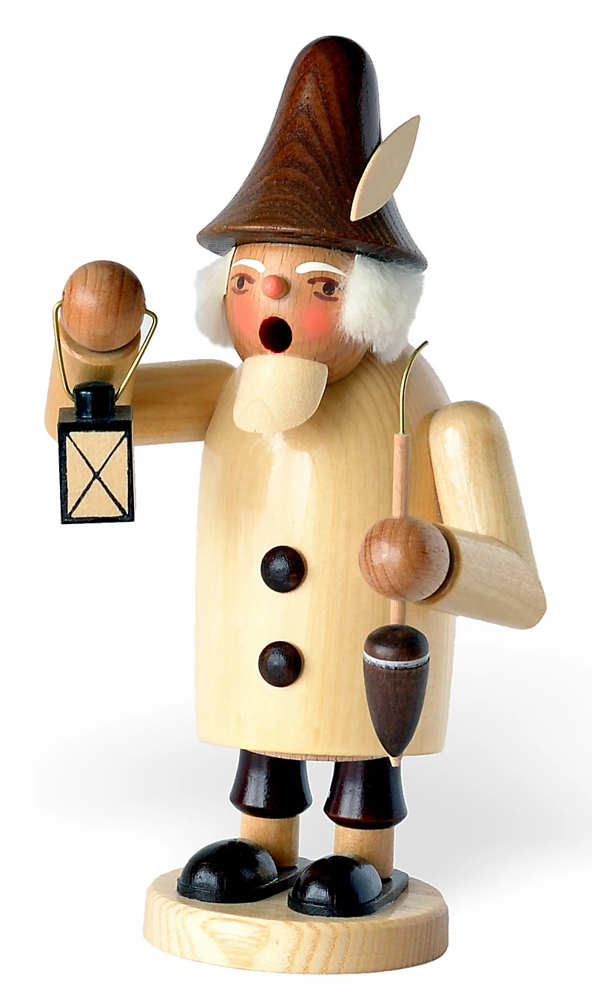
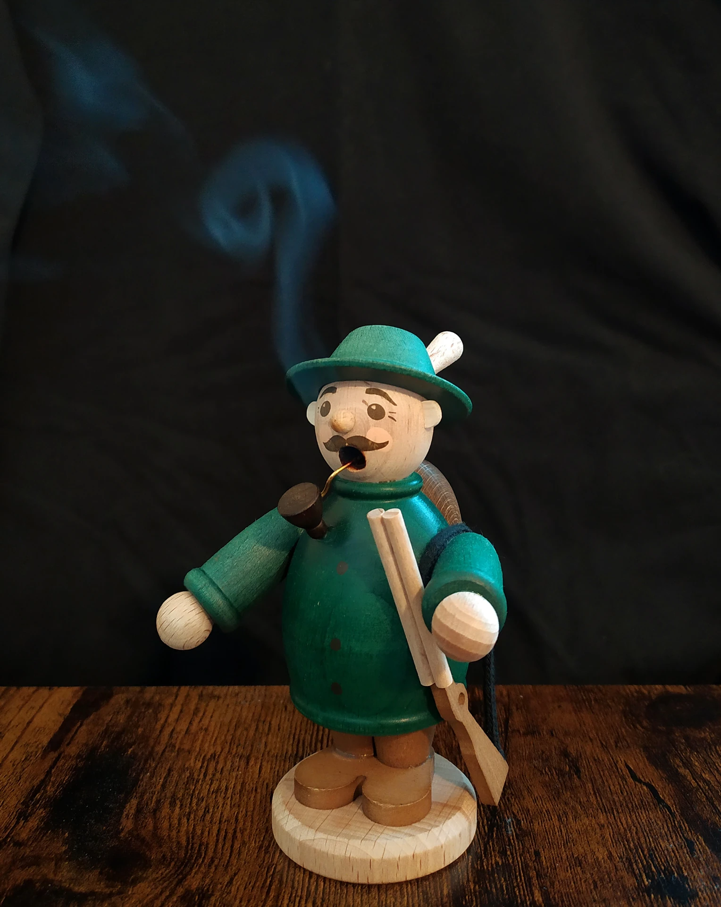
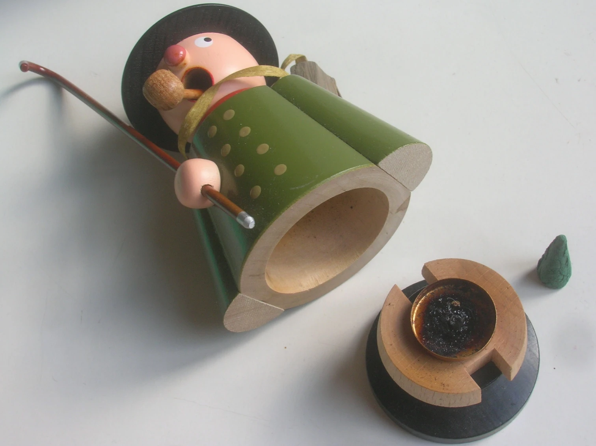

아직 펼치지 않은 카드아기 예수의 장터 · 5향 피우는 인형 로이허멘헨이 나무 아저씨는 입을 동그랗게 벌리고 있어요. 이 입에서는 무엇이 나올까요?이 아저씨 입에서 뭐가 나올까?
1850년 무렵부터독일 작센주 · 에르츠산맥
향 피우는 인형 로이허멘헨
에르츠산맥 사람들은 성탄이 오면 작은 향 원뿔을 피웠어요. 1850년 무렵부터는 그 향을 속이 빈 나무 인형의 배 속에 넣어, 동그란 입으로 연기가 나오게 했어요. 등불을 문질러, 열어 둔 인형의 배 속을 비춰 보세요.
나무 아저씨 배 속에 향을 넣으면 입에서 연기가 몽글몽글 나와. 등불로 아저씨 배 속을 비춰 볼까?
검수 전 시안이에요(기준서 2판). 장면에는 기록에 있는 것만 옮겼고, 전해지는 이야기는 그렇다고 밝혔어요. 상상은 ‘눈 감고 상상해 보기’에만 썼어요.
시안 확인용카드 단계 미리 보기
1
성탄 냄새가 나도록
로이허멘헨이 생기기 전에도 에르츠산맥 사람들은 성탄에 향을 피웠어요. 작은 향 원뿔을 피웠다는 가장 오래된 글은 1830년의 성탄 전야 노래예요.

“카를, 향 하나 피우렴. 성탄 냄새가 나도록. 저기 난로 밑에 있는 작은 받침 위에 올려 두렴.”
에르츠산맥의 성탄 전야 노래(1830) · TU 켐니츠 대림절 달력(2003)이 실은 사투리 구절을 이 안내서가 옮김
옛날 향은 유향 하나뿐이었대요. 독일 말로 유향은 ‘바이라우흐’, 본디 ‘거룩한 연기’라는 뜻이에요. 마태복음은 동방 박사들이 아기 예수께 황금과 유향과 몰약을 드렸다고 전해요(마태복음 2장 11절).
작센 주는 로이허멘헨이 이 지방 사람들의 깊은 신앙에서 비롯했다고 소개해요. 유향을 편하게 피우고, 집에 불이 나지 않게 하려고 썼대요. 오늘의 로이허멘헨은 빵 굽는 사람, 선생님, 사냥꾼처럼 여러 직업의 모습이에요.
로이허멘헨의 배 속에 향 하나를 넣는다면, 어떤 향을 고를까요?
산림관 아저씨 입에서 연기가 몽글몽글! 향은 꼭 어른과 함께 피워야 해.
물어보기성탄절에는 어떤 냄새가 나면 좋을까?
2
속이 빈 아저씨
로이허멘헨은 위아래 두 조각이에요. 윗몸을 들어 올리고 아래 받침에 향 원뿔을 놓아 불을 붙인 뒤, 윗몸을 다시 덮어요. 향은 속 빈 배 안에서 타고, 연기는 동그란 입으로 나와요. 담뱃대를 문 아저씨가 연기를 뿜는 것 같아요.
사진은 열어 둔 로이허멘헨이에요. 앞면의 아저씨가 든 등불처럼, 등불을 문질러 배 속을 비춰 보세요.
등불을 문질러, 열어 둔 로이허멘헨의 속을 비춰 보세요.

열어 둔 로이허멘헨 · 윗몸과 받침, 향 원뿔 하나 · 사진: Anna reg · CC BY-SA 3.0 · 위키미디어 공용
빛이 닿으면 숨은 표시가 나타나요.
다 비췄어요. 받침 위에서 향이 타면, 연기는 속 빈 배를 지나 동그란 입으로 나와요.
얼굴과 팔과 발을 반죽으로 빚어 붙인 첫 향 피우는 인형은 1850년 무렵 자이펜 하이델베르크의 선반공(나무를 돌려 깎는 사람) 페르디난트 프로스가 만들었다고 전해져요. 19세기에 담뱃대를 무는 사람이 늘어난 것이, 속 빈 인형에 향을 넣게 된 까닭일 수 있대요.
아저씨 배 속이 텅 비었어! 여기에 향을 넣으면 입에서 연기가 나와.
물어보기연기는 어디로 나올까?
눈 감고 상상해 보기
눈을 감아 보세요. 눈 내린 성탄 저녁, 에르츠산맥의 작은 방이에요. 난로가 따뜻하고, 창가에 선 나무 아저씨의 동그란 입에서 가는 연기가 피어올라요. 유향 냄새가 천천히 방 안을 채워요.
눈을 감아 봐. 나무 아저씨 입에서 연기가 몽글몽글. 음, 좋은 냄새!
나의 자리
노래 속 카를은 ‘성탄 냄새가 나도록’ 향을 피웠어요. 우리 집에서 해마다 ‘성탄이 왔구나’ 하고 알려 주는 냄새나 손길은 무엇인가요?
성탄절이 오면 우리 집에서는 무슨 냄새가 나? 같이 맡아 볼까?
마음에 닿는 한 줄을 고르거나 직접 써 보세요. 한 줄을 남기면 이 자리의 도장이 찍혀요. 이 기기에만 저장돼요.
더 깊이
궁금한 칸만 펼쳐 읽어도 괜찮아요.
알고 보면
따로 만들어 붙이는 조각 다리·팔·받침은 따로 돌려 깎고, 모자·코·신발·담뱃대도 따로 만들어 붙여요. 다 맞춘 뒤 사포로 다듬고 밑칠한 다음 알록달록 칠해요(독일 성탄 박물관).
향 원뿔 빚기 반죽 덩어리에서 떼어 판 위에서 손으로 원뿔을 빚어요. 지금은 보통 크기는 기계로 눌러 찍고, 큰 것은 손으로, 산타·성탄 나무 모양은 손 틀로 만들어요(TU 켐니츠).
약국의 향 18세기 의학에서는 향을 피워 병을 다스리는 일이 중요했어요. 약사들이 백일해나 천식에 쓰거나 공기를 맑게 하려고 향 원뿔과 향 가루를 만들기도 했대요(약국 신문).
사투리 이름 에르츠산맥 사투리로는 로이허멘헨을 ‘라허만넬(Raachermannel)’이라고 불러요.
기록마다 다른 점
첫 인형을 만든 사람 페르디난트 프로스가 1850년 무렵 처음 만들었다는 것은 ‘전해지는’ 이야기예요(자이펜 관광 안내). 독일 성탄 박물관은 에르츠산맥을 로이허멘헨이 ‘태어난 곳’이라고만 하고 때는 적지 않아요.
향 원뿔의 시작 글로 남은 가장 오래된 것은 1830년 노래예요. 한 향 공방 집안은 11~12세기 광부들이 일하러 가기 전에 향으로 자신과 연장을 축복했다고 전하지만, 그 회사가 전하는 이야기예요. 떠돌이 장사꾼들이 튀링겐에서 향 원뿔을 들여왔다는 기록도 있어요(TU 켐니츠).
왜 향을 피웠을까 작센 주는 신앙에서 비롯했다고 소개하고, 약국 신문은 병을 다스리고 공기를 맑게 하려던 18세기 약사들의 향을 이야기해요. 두 이야기가 함께 이어져 온 것으로 보여요.
더 보기
배 속 비춰 보기 금박
등불로 열어 둔 로이허멘헨을 비춰, 숨은 네 곳을 모두 찾으면 카드에 금박이 입혀져요.
숨은 네 곳을 모두 찾기
성탄 향 고르기 채색
둘 가운데 하나만 해도 카드가 채색돼요.
로이허멘헨의 배 속에 넣을 향 고르기
아이와 함께 ‘영화처럼 보기’를 끝까지 보기
근거 보기 (9)
- TU 켐니츠 대림절 달력 2003년 19일: 향 원뿔 — 1830년 성탄 전야 노래(가장 오래된 글), 1850년 무렵 첫 로이허멘헨보다 먼저, 라허만넬, 한 향 공방 집안이 전하는 광부들의 향, 튀링겐의 떠돌이 장사꾼, 노이도르프 공방(1930년부터), 숯·녹말 반죽·향, 손으로 빚기와 기계, 유향·가문비나무·소나무 등 향
- TU 켐니츠 대림절 달력 2015년 21일: 로이허멘헨 — 숯가루·감자 녹말·계피·몰약·재스민, 옛날에는 유향뿐
- 자이펜 관광 안내: 목공예 A~Z — 향 원뿔(숯가루·너도밤나무 가루·감자 녹말·향), 담뱃대를 무는 풍습이 까닭일 수 있음, 반죽 얼굴과 팔다리의 첫 로이허멘헨을 1850년 무렵 자이펜 하이델베르크의 선반공 페르디난트 프로스가 만들었다고 전해짐, 몇백 년 된 에르츠산맥 성탄의 향
- 독일 성탄 박물관(로텐부르크): 로이허멘헨 — 19세기 담배의 유행, 에르츠산맥이 태어난 곳, 두 조각, 심재 없는 단단한 나무, 네모난 나무를 돌려 깎고 배 속을 팜, 받침 위 향, 입까지 통로, 따로 만드는 조각, 칠
- 작센 주 지역 누리집: 에르츠산맥의 나무 공예 — 로이허멘헨은 이 지방 사람들의 깊은 신앙에서 비롯, 유향을 편하게 피우고 불을 막음, 빵 굽는 사람·선생님·사냥꾼 등 여러 직업
- DWDS(독일어 사전): Weihrauch — 본디 ‘거룩한 연기’
- 약국 신문(apotheke adhoc): 약사가 만든 향 — 18세기의 ‘치료하는 향’, 백일해·천식·공기 맑게 하기
- 개역개정 마태복음 2장 11절: 동방 박사들의 황금·유향·몰약
- 위키미디어 공용: 열어 둔 로이허멘헨(Anna reg, 2009), 연기 내는 산림관(Paintler, 2026), 등불 든 로이허멘헨(André Karwath, 2005) 파일 정보
그림·사진·소리 출처
‘처음 만나는 기독교 문화’의 깊은 카드예요. 카드 단계와 남긴 글은 이 기기에만 저장돼요.